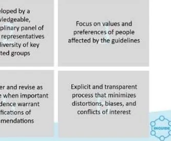
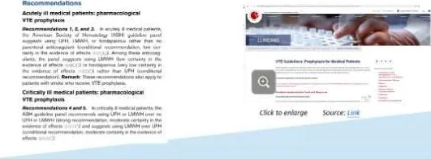
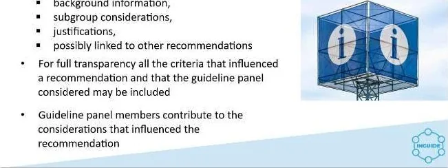
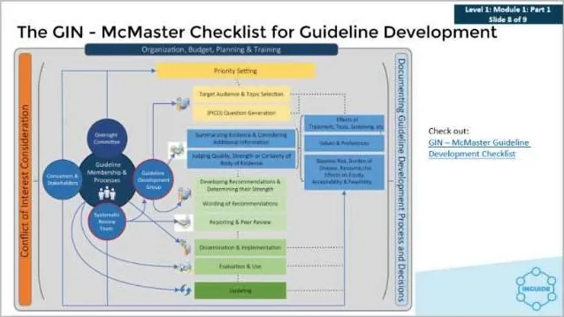
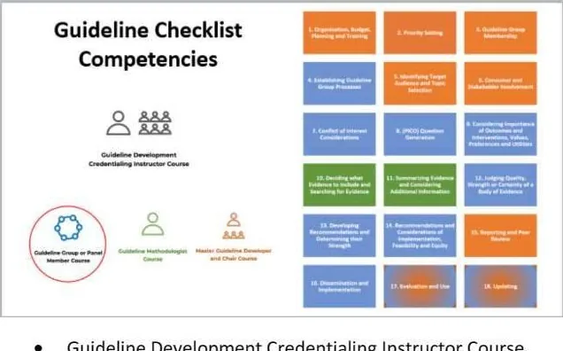
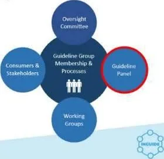
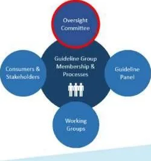

DETAIL COMMENTARY
講義の順序に沿った詳細解説
図版はクリックすると拡大できます。本文中に表示されない図は「全スライド」表示で確認できます。
# INGUIDE Level 1: Module 01 日本語解説コンテンツ# ドキュメント概要本ドキュメントは、INGUIDE（International Guideline Development）プログラム Level 1: Module 01 の学習資料を日本語化した完成原稿です。
INGUIDEプログラムは、Guidelines International Network（GIN）とMcMaster大学GRADEセンター（McGRADE）の共同により開発された、ガイドライン開発の資格認定・認証プログラムです。Level 1は「ガイドラインパネルメンバー（ガイドライン開発グループメンバー）」の役割に焦点を当てたコースです。
Module 01は3つのパートで構成されています：
パート1：学習目標と概要 — ガイドラインの定義、推奨の構造、信頼性の高いガイドラインの6原則、GIN-McMasterチェックリストの紹介パート2：ガイドラインプロセス — ガイドラインプロセスに関わる人々、グループメンバーシップ、グループプロセスの確立、エビデンスと意見の区別、対象読者の特定パート3：消費者・ステークホルダーの関与と利益相反への配慮 — ステークホルダーの関与、利益相反の定義・申告・管理、GINの9つの原則学習目標：
ガイドラインパネルメンバーまたはガイドライン開発グループメンバーの視点から、健康ガイドラインの作成に有意義に参加できるよう準備する ガイドラインパネルメンバーに関連するガイドライン開発プロセスの具体的なステップを適用できるようになる GIN-McMasterのガイドライン開発アプローチを理解する INGUIDE Level 1: Module 01 目次 インストラクター紹介 インストラクター：Dr. Holger Schünemann 開示事項 パート1：学習目標と概要 コースの目標 診療ガイドライン 推奨とは何か？ ガイドラインの構造 信頼性が高く質の高いガイドラインの6原則 補足情報 ガイドライン開発に通常関与する組織 GIN-McMasterガイドライン開発チェックリスト ガイドラインチェックリストのコンピテンシー パート1完了 パート2：ガイドラインプロセス ガイドラインプロセスに関わる人々 — ガイドラインパネル ガイドラインプロセスに関わるその他の人々 — パネル以外 ガイドライン開発の最初のステップ ガイドライングループメンバーシップ — 選定と関与する人々 ガイドライングループメンバーシップ — パネルメンバー グループプロセスの確立 ガイドライングループプロセスの確立 — コミットメント エキスパートとは何か？ ガイドラインにおけるエビデンスと意見の区別 — パート1 ガイドラインにおけるエビデンスと意見の区別 — パート2 対象読者の特定とトピックの理解 パート2完了 パート3：消費者・ステークホルダーの関与と利益相反への配慮 消費者・ステークホルダーの関与 利益相反 — 定義 利益相反 — 申告と管理 利益相反 — GIN原則 パート1 利益相反 — GIN原則 パート2 利益相反 — GIN原則 パート3 利益相反 — GIN原則 パート4 利益相反 — GIN原則 パート5 利益相反 — GIN原則 パート6 利益相反 — GIN原則 パート7 利益相反 — GIN原則 パート8 利益相反 — GIN原則 パート9 パート3完了 付録：GIN-McMaster ガイドライン開発チェックリスト # インストラクター紹介# インストラクター：Dr. Holger Schünemann# Module 1 インストラクターDr. Holger Schünemann

元のファイル名: image71.jpeg）— Dr. Holger Schünemannの顔写真 こんにちは、私はHolger Schünemannです。ガイドライン資格認定・認証プログラムの最初のコースのインストラクターを務めます。
このプログラムは、Guidelines International Network（GINとも呼ばれます）とMcMaster大学GRADEセンター（McGRADEとも呼ばれます）の貢献により開発されました。
このコースでは、ガイドライン開発グループまたはガイドラインパネルメンバーの役割に焦点を当てます。
補足【GINとMcMaster大学について】
Guidelines International Network（GIN） は、ガイドライン開発、適応、実装に関わる組織や個人の国際的なネットワークです。世界各国のガイドライン開発団体、研究者、臨床家などが参加しています。
McMaster大学 はカナダ・オンタリオ州ハミルトンにある大学で、エビデンスに基づく医療（EBM）の発祥地として知られています。McMaster大学のGRADEセンター（McGRADE）は、GRADEシステムの開発と普及に中心的な役割を果たしています。
# 開示事項図版参照 元のファイル名: image69.jpg）— 開示事項のスライド（全スライド表示で確認できます）
元のファイル名: image70.jpg）— 開示事項のスライド（重複 Cochrane Canada — ディレクター GRADE Working Group — 共同議長 Guidelines International Network — 理事会メンバー 開示事項として、私はこのコースを通じて繰り返し言及されるグループにおいて様々な役割を担っています。
これらのグループには、Cochrane、GRADEワーキンググループ、およびGuidelines International Networkが含まれます。
補足【Cochraneについて】
Cochrane（コクラン） は、医療における意思決定に役立つ質の高いエビデンスを提供することを目的とした国際的な非営利組織です。Cochraneは特にシステマティックレビューの作成で世界的に知られており、医療ガイドライン開発の基盤となるエビデンスの提供に大きく貢献しています。
GRADE Working Group は、エビデンスの確実性を評価し推奨の強さを決定するための国際的に広く使用されているアプローチ（GRADEシステム）を開発・維持しているグループです。
# パート1：学習目標と概要国際ガイドライン開発
図版参照 元のファイル名: image72.jpg）— パート1タイトルスライド（全スライド表示で確認できます）
# コースの目標図版参照 元のファイル名: image73.jpg）— コースの目標スライド（全スライド表示で確認できます）
コースの目標
ガイドラインパネルまたはガイドライン開発グループメンバーの視点から、健康ガイドラインの作成に有意義に参加できるよう準備する ガイドラインパネルメンバーに関連するガイドライン開発プロセスの具体的なステップを適用できるようになる GIN-McMasterのガイドライン開発アプローチを理解する このコースの修了時には、学習者はガイドラインパネルまたはガイドライン開発グループメンバーの視点から、健康ガイドラインの作成に有意義に参加できるよう準備が整います。これらの用語は互換的に使用します。
さらに、学習者はガイドラインパネルメンバーに関連するガイドライン開発プロセスの具体的なステップを適用できるようになります。
また、学習者はGIN-McMasterのガイドライン開発アプローチで概説されている方法論についても理解を深めます。
# 診療ガイドライン図版参照 元のファイル名: image74.jpg）— 診療ガイドラインのスライド（全スライド表示で確認できます）
図版参照 元のファイル名: image1.jpeg）— 診療ガイドラインに関する参考画像（全スライド表示で確認できます）
# 診療ガイドライン医療提供者、受益者、その他のステークホルダーが適切な健康介入について情報に基づいた意思決定を行うことを可能にする、系統的に開発されたエビデンスに基づく声明 健康介入には、臨床手技、公衆衛生上の行動、および政策が含まれる（WHO、IOM） 健康または医療を最適化することを目的とした推奨を含む声明 エビデンスのシステマティックレビューと、代替選択肢の望ましい結果と望ましくない結果の評価に基づいて作成される 参考文献：Ann Intern Medicine. https://doi.org/10.7326/M18-3445
ガイドラインとは何でしょうか？ ガイドラインとは、医療提供者、受益者、その他のステークホルダーが適切な健康介入について情報に基づいた意思決定を行うことを可能にする、系統的に開発されたエビデンスに基づく声明です。健康介入は、臨床手技、公衆衛生上の行動、および政策を含む広い概念として定義されます。
健康ガイドラインとは、エビデンスのシステマティックレビューと代替選択肢の望ましい結果と望ましくない結果の評価に基づいて作成された、健康または医療を最適化することを目的とした推奨を含む声明です。
補足【システマティックレビューについて】
システマティックレビュー（systematic review） とは、特定の臨床疑問に対して、明確な方法論に基づいて網羅的に文献を検索・選択・評価し、結果を統合する研究手法です。個々の研究のバイアスを最小限にし、利用可能なエビデンスの全体像を提示することを目的としています。ガイドライン開発において、推奨の根拠となるエビデンスはシステマティックレビューによって収集・評価されることが国際的な標準となっています。
日本では、Minds（Medical Information Network Distribution Service） が「Minds診療ガイドライン作成マニュアル」を公開しており、日本語でのガイドライン開発方法論の標準を示しています。
# 推奨とは何か？図版参照 元のファイル名: image75.jpg）— 推奨とは何かのスライド（全スライド表示で確認できます）
図版参照 元のファイル名: image2.jpeg）— ガイドラインの推奨例（全スライド表示で確認できます）
推奨とは、具体的で実行可能な声明である ガイドラインは1つまたは多数の推奨を含む 右の画像は、ガイドライン中の多数の推奨のうちの1つの例を示している 推奨の数を決定する要因には、時間、利用可能なリソース、および優先事項の数が含まれる 参考文献：https://www.dropbox.com/s/9ucbc6fagih0x2f/Schunemann%20-
推奨とは何でしょうか？ 推奨とは、具体的で実行可能な声明です。曖昧すぎて実施できない声明や、非効率的または逆効果な行動につながりかねない声明は避けるべきです。ガイドラインは1つまたは複数の推奨を含みます。ここに示されているのは、ガイドライン中の多数の推奨のうちの1つの例です。ガイドラインにおける推奨の数は、トピックや優先事項、利用可能な時間やリソースなど、多くの要因によって決定されます。
補足【推奨の構成要素について】
ガイドラインにおける推奨は通常、以下の要素を含みます：
推奨の方向性 ：介入を「行うこと」を推奨するか、「行わないこと」を推奨するか推奨の強さ ：「強い推奨」か「弱い推奨（条件付き推奨）」かエビデンスの確実性 ：推奨を支持するエビデンスがどの程度信頼できるか例えば「急性期の内科入院患者に対して、薬理学的VTE予防として低分子ヘパリンの使用を推奨する（強い推奨、中程度の確実性のエビデンス）」のような形で記述されます。
# ガイドラインの構造図版参照 元のファイル名: image76.jpg）— ガイドラインの構造スライド（全スライド表示で確認できます）
# ガイドラインの構造ガイドラインは、科学雑誌の論文として、または組織のウェブサイト上で公開される場合がある 通常、主要な推奨とその推奨の簡潔な根拠を含むエグゼクティブサマリーが含まれる ガイドラインは、科学雑誌の論文として、組織のウェブサイト上で、またはアプリなどその他の手段を通じて公開される場合があります。
通常、主要な推奨とその推奨の簡潔な根拠を含むエグゼクティブサマリーが含まれます。
# 信頼性が高く質の高いガイドラインの6原則図版参照 元のファイル名: image77.jpg）— 6原則のスライド（全スライド表示で確認できます）

元のファイル名: image68.jpg）— 6原則の詳細表示 図版参照 元のファイル名: image78.jpg）— 6原則の詳細表示（追加（全スライド表示で確認できます）
# 信頼性が高く質の高いガイドラインの6原則表示されるロゴ：
世界保健機関（WHO） 米国国立科学アカデミー Guidelines International Network AGREEコンソーシアム RIGHTワーキンググループ システマティックレビューの方法論を用いた最良のエビデンスに基づいている 知識豊富な多職種の専門家パネルと主要な影響を受けるグループの多様な代表者によって開発されている ガイドラインの影響を受ける人々の価値観と選好に焦点を当てている 代替選択肢と健康アウトカムの関係を明確に説明し、エビデンスの確実性と推奨の強さの評価を提供している 重要な新しいエビデンスが推奨の修正を正当化する場合に適切に再検討・改訂される 歪み、バイアス、利益相反を最小化する明示的で透明性のあるプロセスに基づいている 多くの専門家グループの作業は、信頼性の高いガイドラインのためのいくつかの中核的原則について一致しています。
これらのグループには、世界保健機関（WHO）、米国国立科学アカデミー、Guidelines International Network、AGREEコンソーシアム、およびRIGHTワーキンググループが含まれます。
ガイドラインが信頼性が高く質の高いものとなるために満たすべき原則は少なくとも6つあります。
システマティックレビューの方法論を用いた最良のエビデンスに基づいていること 知識豊富な多職種の専門家パネルと主要な影響を受けるグループの多様な代表者によって開発されていること ガイドラインの影響を受ける人々にとって重要なことに焦点を当てていること。健康ガイドラインの文脈では、これは価値観と選好を考慮に入れることを意味します 代替選択肢と健康アウトカムの関係を明確に説明し、エビデンスの確実性と推奨の強さの両方の評価を提供していること 重要な新しいエビデンスが推奨の修正を正当化する場合に適切に再検討・改訂されること そして最後に、歪み、バイアス、利益相反を最小化するための明示的で透明性のあるプロセスに基づいていること 補足【AGREEとRIGHTについて】
AGREE II（Appraisal of Guidelines for Research and Evaluation II） は、ガイドラインの質を評価するための国際的に広く使用されているツールです。ガイドラインの「対象と目的」「ステークホルダーの参加」「開発の厳密さ」「提示の明確さ」「適用可能性」「編集の独立性」の6つの領域で評価を行います。
RIGHT（Reporting Items for practice Guidelines in HealThcare） は、ガイドラインの報告の質を標準化するためのチェックリストです。ガイドラインの報告に含めるべき項目を網羅的にリスト化しています。
日本でもMindsがAGREE IIの日本語版を提供しており、ガイドラインの質評価に活用されています。
# 補足情報図版参照 元のファイル名: image79.jpg）— 補足情報のスライド（全スライド表示で確認できます）
# 補足情報推奨は以下によって支持される： 解説的注釈 背景情報 サブグループの考慮事項 正当化の根拠 他の推奨との関連性 完全な透明性のために、推奨に影響を与えたすべての基準とガイドラインパネルが検討した事項が含まれる場合がある ガイドラインパネルメンバーは、推奨に影響を与えた考慮事項に貢献する 理想的には、推奨は解説的注釈、背景情報、サブグループの考慮事項、正当化の根拠によって支持され、場合によっては他の推奨と関連付けられます。完全な透明性のために、推奨に影響を与えたすべての基準とガイドラインパネルが検討した事項が含まれる場合があります。推奨に影響を与えた考慮事項に貢献することは、ガイドラインパネルメンバーの役割です。
# ガイドライン開発に通常関与する組織図版参照 元のファイル名: image80.jpg）— 関与する組織のスライド（全スライド表示で確認できます）
# ガイドライン開発に通常関与する組織これらの組織は通常、監督的役割を担い、グループを任命する ガイドライン開発に関与できる個人は、様々な背景から来ることができる ガイドライン開発のイニシアチブはどの組織からでも生まれ得ますが、通常は政府の保健部門（例：保健省）、特定の保健分野を代表する専門職団体（例：米国血液学会）、または非政府系保健組織（例：世界保健機関）が関与します。
これらの組織は通常、監督的役割を担い、ガイドライン開発グループまたはパネルを任命します。
ガイドライン開発に関与する個人は、臨床医、公衆衛生担当者、医療専門職、医療政策立案者、ならびに患者または疾患を持つ人々とその代表者を含む様々な背景から来ることができます。
補足【日本におけるガイドライン開発組織】
日本では、日本医療機能評価機構 がMinds（Medical Information Network Distribution Service）を運営し、ガイドライン作成の方法論的支援と情報提供を行っています。また、各学会（例：日本循環器学会、日本癌治療学会など）がそれぞれの専門領域でガイドラインを開発しています。厚生労働省も政策的な観点からガイドライン作成に関与することがあります。
# GIN-McMasterガイドライン開発チェックリスト図版参照 元のファイル名: image81.jpg）— GIN-McMasterチェックリストのスライド（全スライド表示で確認できます）
# GIN-McMasterガイドライン開発チェックリストを確認しましょうこのコースは主に、GIN-McMasterチェックリストおよびガイドライン開発ツールボックスによって定義されたガイドライン開発の概念的記述を使用しています。ここに示されているのは、GIN-McMasterチェックリストの模式的な表示です。
これらの各構成要素とステップは、このコースの中で、ガイドラインパネルメンバーに関連するものに重点を置いて議論されます。
補足【GIN-McMasterチェックリストについて】
GIN-McMasterガイドライン開発チェックリストは、ガイドライン開発の全プロセスを18のステップに分けて体系的に整理したものです。各ステップには具体的なチェック項目が含まれており、ガイドライン開発者がプロセスの計画と追跡、ステップの見落とし防止に活用できます。このチェックリストは2013年12月に公開され、国際的に広く参照されています。付録にチェックリストの全18ステップの概要を掲載しています。
# ガイドラインチェックリストのコンピテンシー図版参照 元のファイル名: image82.jpg）— チェックリストコンピテンシーのスライド（全スライド表示で確認できます）

元のファイル名: image83.jpg）— チェックリストコンピテンシーのスライド（追加 # ガイドラインチェックリストのコンピテンシーガイドライン開発資格認定インストラクターコース
ガイドライングループまたはパネルメンバーコース ガイドライン方法論者コース マスターガイドライン開発者および議長コース 組織、予算、計画およびトレーニング 優先順位の設定 ガイドライングループメンバーシップ ガイドライングループプロセスの確立 対象読者の特定とトピックの選定 消費者とステークホルダーの関与 利益相反への配慮 （PICO）クエスチョンの作成 アウトカムと介入の重要性、価値観、選好、効用の検討 どのエビデンスを含めるかの決定とエビデンスの検索 エビデンスの要約と追加情報の検討 エビデンスの質、強さ、または確実性の判定 推奨の作成とその強さの決定 推奨の文言ならびに実施、実現可能性、公平性の考慮事項 報告とピアレビュー 普及と実装 評価と使用 更新 GIN-McMasterアプローチは、GIN-McMasterガイドライン開発チェックリストにおいてステップバイステップで示されています。
ガイドライン開発チェックリストプロジェクトは、INGUIDEプログラムと同様に、Guidelines International Network（GIN）とMcMaster大学のパートナーシップです。
このチェックリストは、ガイドライン開発者がガイドライン開発のプロセスを計画・追跡し、ステップの見落としがないようにするために使用することを意図しています。また、個々のステップとトピックに関する重要なリソースも提供します。
ガイドライン開発グループメンバーとして、あなたはチェックリストに記載されている多くのステップに精通していくことになります。
補足【PICOについて】
PICO は、臨床疑問を構造化するためのフレームワークで、以下の4要素から構成されます：
P（Population/Patient） ：対象となる患者集団I（Intervention） ：評価する介入C（Comparison/Comparator） ：比較対照O（Outcome） ：評価するアウトカム例えば、「2型糖尿病の成人患者（P）において、メトホルミン（I）はプラセボ（C）と比較して、HbA1cの改善（O）に有効か？」のように構造化します。このフレームワークは、ガイドライン開発においてエビデンスを検索・評価する際の基盤となります。
# パート1完了パート1を完了しました！
パート2ではガイドラインプロセスについて説明します。
パート1を完了しました！
パート2ではガイドラインプロセスについて説明します。
パート1完了
# パート2：ガイドラインプロセス図版参照 元のファイル名: image84.jpg）— パート2タイトルスライド（全スライド表示で確認できます）
# ガイドラインプロセスに関わる人々 — ガイドラインパネル【チェックリスト対応】ステップ3：ガイドライングループメンバーシップ
図版参照 元のファイル名: image85.jpg）— ガイドラインパネルのスライド（全スライド表示で確認できます）
# ガイドラインプロセスに関わる人々 — ガイドラインパネルガイドラインパネルメンバーとして、あなたは推奨を決定するプロセスの一部となります
ガイドライングループメンバーシップとプロセス：
消費者とステークホルダー ガイドラインパネル ワーキンググループ 監督委員会 ガイドラインパネルメンバーとして、あなたは推奨を決定するプロセスの一部となります
ここでは、ガイドラインプロセスに関わる人々を見ることができます。ガイドラインパネルメンバーとして、あなたは私たちが話してきた推奨を決定するプロセスの一部となります。
# ガイドラインプロセスに関わるその他の人々 — パネル以外図版参照 元のファイル名: image86.jpg）— パネル以外の関与者スライド（全スライド表示で確認できます）
図版参照 元のファイル名: image87.jpg）— 監督委員会の図（全スライド表示で確認できます）
# ガイドラインプロセスに関わるその他の人々 — パネル以外監督委員会：
ガイドラインプロセス全体に責任を持ち、ガイドラインコーディネーターが含まれる場合がある。また、委員会はガイドライン開発の提案の承認と完成したガイドラインの承認を担当する場合もある 例えば、WHOにはガイドラインレビュー委員会があり、WHOのガイドラインがWHOガイドライン開発ハンドブックに従っていることを確認している ガイドラインパネル：
関心のある領域に専門知識を持つ個人のグループで、1名以上の議長のリーダーシップのもとで推奨を作成する 消費者・ステークホルダー：
外部または内部からの意見を提供し、ガイドラインパネルのメンバーである場合もある ピアレビューの段階やガイドラインプロセスの様々な段階でフィードバックを提供するために関与する場合がある ワーキンググループ：
例えば、文献レビューを実施するグループや特定のトピックの技術的専門家として役割を果たすグループ 次に、プロセスに関わるグループと人々に焦点を当てましょう。前述のとおり、この図は全体的なプロセスを説明しています。関わる主要な人々は以下に分類できます：
監督委員会 は通常、ガイドラインプロセス全体に責任を持ち、ガイドラインコーディネーター（ガイドラインを作成する多くの専門学会にはプロセスを管理するコーディネーターがいることが多く、WHOではテクニカルオフィサーがいます）が含まれる場合があります。また、委員会はガイドライン開発の提案の承認と、最終的には完成したガイドラインの承認を担当する場合もあります。
例えば、WHOまたは世界保健機関にはガイドラインレビュー委員会があり、WHOが作成するガイドラインがWHOガイドライン開発ハンドブックに従っていることを確認しています。
ガイドラインパネル は一般的に、患者や一般市民の代表を含む、関心のある領域に専門知識を持つ個人のグループであり、1名以上の議長のリーダーシップのもとで推奨を作成します。
消費者とステークホルダー は外部または内部からの意見を提供し、ガイドラインパネルのメンバーである場合もあります。ただし、ピアレビューの段階のみに関与したり、ガイドラインプロセスの様々な段階でフィードバックを提供するために関与する場合もあります。例えば、質問の優先順位付けやアウトカムのランキングの際などです。
最後に、文献レビューを実施するグループや特定のトピックの技術的専門家として役割を果たすグループなど、ワーキンググループ が存在することがよくあります。
# ガイドライン開発の最初のステップ【チェックリスト対応】ステップ1：組織、予算、計画およびトレーニング
図版参照 元のファイル名: image88.jpg）— 最初のステップのスライド（全スライド表示で確認できます）
# ガイドライン開発の最初のステップガイドラインパネルメンバーとして、ステップが適切に遵守されていることを確認したいと考えるでしょうが、その多くについてはあなたが責任を負うわけではありません
ステップ1
ガイドラインパネルメンバーは、監督委員会の一員でない限り、通常このステップには関与しません
ステップ2
メイントピックの優先順位設定 実務者、患者、政策立案者を含む主要なステークホルダーにとっての重要性の基準を使用 ガイドラインパネルメンバーとして、ステップが適切に遵守されていることを確認したいと考えるでしょうが、その多くについてはあなたが責任を負うわけではありません。
GIN-McMasterチェックリストの最初のステップは、ガイドラインの組織、予算、計画、トレーニングに関するものです。ガイドラインを開発する組織が、経験豊富なガイドライン開発者からの意見を得て、主にこのステップを決定します。
前述のとおり、ガイドラインパネルメンバーは、監督委員会の一員でない限り、通常このステップには関与しません。ただし、このステップが成功裏に行われたかどうかを確認することはできます。例えば、プロジェクトに資金があるかどうか、またはガイドライン開発中に資金が枯渇するリスクがあるかどうかなどです。
2番目のステップは、実務者、患者、政策立案者を含む主要なステークホルダーにとっての重要性の基準を使用して、メイントピック（例えば、乳がんスクリーニングやガイドラインが必要な希少疾患）の優先順位を設定することです。
この段階では、ガイドラインパネルメンバーはまだパネルメンバーとしての作業を開始していません。トピックの優先順位を設定するための協議プロセスには参加する場合がありますが、通常はまだパネルメンバーの役割ではありません。
# ガイドライングループメンバーシップ — 選定と関与する人々【チェックリスト対応】ステップ3：ガイドライングループメンバーシップ
図版参照 元のファイル名: image89.jpg）— グループメンバーシップ選定のスライド（全スライド表示で確認できます）
# ガイドライングループメンバーシップ — 選定と関与する人々ガイドライングループメンバーは通常、グループメンバーの選定プロセスには参加しない パネルメンバーが認識しておくべき主な考慮事項がある 主要なステークホルダーのすべてのグループの代表者を含む、バランスのとれた多職種構成を持つ ガイドラインパネル内にはいくつかの潜在的な役割がある ガイドライングループリーダーとメンバーの招待は、通常、主導組織が監督委員会と協力して行う 役割と期待は最初に概説されるべきであり、適切なリーダーを選定する必要がある 選定プロセス全体と役割の説明は透明性を確保するために文書化されるべきである ガイドライングループメンバーは通常、議長の任命を含むグループメンバーの選定プロセスには参加しません。それは通常、ガイドラインに責任を持つ組織によって行われます。
それでも、適切なパネルを構成するために何が必要かを理解するために、パネルメンバーが認識しておくべきいくつかの主な考慮事項があります。
ガイドライングループまたはパネルが、主要なステークホルダーのすべてのグループの代表者を含む、バランスのとれた多職種構成を持つことが極めて重要です。これには、ガイドラインが対象とする読者からのメンバー、患者とその代表者、医療提供者、コンテンツの専門家、方法論の専門家、医療経済学者、政策立案者が含まれます。その他の関連する考慮事項には、例えばジェンダー、人種、地理的代表性のバランスが含まれます。技術的専門家、システマティックレビュー著者、オブザーバー、技術スタッフなど、ガイドラインパネル内にはいくつかの潜在的な役割もあります。
ガイドライングループリーダーとメンバーの招待は、通常、主導組織が監督委員会と協力して行いますが、他のアプローチも可能です。
役割と期待は最初に概説されるべきであり、適切なリーダーを選定する必要があります。
選定プロセス全体と役割の説明は透明性を確保するために文書化されるべきであり、ガイドライン利用者が懸念事項の有無を判断できるようにします。
# ガイドライングループメンバーシップ — パネルメンバー図版参照 元のファイル名: image90.jpg）— パネルメンバーのスライド（全スライド表示で確認できます）
# ガイドライングループメンバーシップ — パネルメンバーガイドライン参加者ツールはガイドラインパネルのメンバーに情報を提供する 追加の役割がパネルメンバーに割り当てられる場合がある 一部のグループでは専門家にエビデンスの提供を求める パネルメンバーの責任：
ガイドラインのための質問の優先順位付け グループ会議への参加 エビデンスと文脈的要因に関する意見の提供 エビデンスの要約のレビュー 提示されたエビデンスに基づく判断と推奨の策定 最終ガイドライン報告書のレビューと執筆 ガイドラインの普及の支援 ガイドラインパネルでは、すべての正規メンバーは平等な発言権を持ちます。通常、パネルメンバーは以下の責任を負います：
ガイドラインのための質問の優先順位付け グループ会議への参加（対面、ウェブ会議、または電話会議が可能） エビデンスと文脈的要因に関する意見の提供 エビデンスの要約のレビュー 提示されたエビデンスに基づく判断の実施と推奨の策定 最終ガイドライン報告書のレビューと執筆 そして最後に、ガイドラインの普及の支援 多くのガイドライン開発者は、ガイドラインパネルのメンバーに情報を提供するために、ガイドライン参加者ツールなどのツールを使用しています。
追加の役割がパネルメンバーに割り当てられる場合があります。例えば、患者とその代表者は、患者または当事者の視点から具体的な情報を提供するよう求められる場合があります。また、研究方法論者は、エビデンスの質を詳細に批判的にレビューするよう招かれる場合があります。
一部のグループでは、特にエビデンスが乏しい場合に、専門家にエビデンスの提供を求めたり、エビデンス統合プロセスへの支援を求めたりすることがあります。
# グループプロセスの確立【チェックリスト対応】ステップ4：ガイドライングループプロセスの確立
図版参照 元のファイル名: image91.jpg）— グループプロセスの確立スライド（全スライド表示で確認できます）
# グループプロセスの確立パネルメンバー：
開発プロセスが始まる前に、あなたの任務、義務、権利を理解する 異なる声からの意見に平等な機会を確立することを目的とした多職種パネル コミュニケーションのルール：
コミュニケーションの頻度と方法、トレーニングとサポート、議論とフィードバックの機会、文書の共有に関するルールを事前に確立する 会議の議事録を記録し、常にアクセス可能とする 投票：
投票するパネルメンバーは以下を認識しておく必要がある： 議長や他のパネルメンバーとの関わり方 期待される判断 コンセンサスに達するためのルール 対立や紛争の処理プロセス パネルメンバーとして、開発プロセスが始まる前に、あなたの任務、義務、権利を理解しておくべきです。全体として、多職種パネルの目的は、異なる声からの意見に平等な機会を確立することであるべきです。
コミュニケーションの頻度と方法、トレーニングとサポート、議論とフィードバックの機会、文書の共有に関するルールは事前に確立されます。会議の議事録は記録され、内部のみ、または内部と外部の両方で常にアクセス可能である必要があります。
投票するパネルメンバーは、議長や他のパネルメンバーとどのように関わることが期待されているか、どのような判断が期待されているか、コンセンサスに達するためのルールは何か、対立や紛争に対処するプロセスは何か（例えば、匿名投票の使用や、推奨を策定するための定足数など）についても認識しておく必要があります。
補足【コンセンサス方法について】
ガイドライン開発で使用される主な合意形成方法には以下があります：
Delphi法（デルファイ法） ：専門家に匿名でアンケートを行い、結果をフィードバックした上で再度意見を求めるプロセスを繰り返す方法です。対面での議論による影響（権威への追従など）を回避できる利点があります。
名目集団法（Nominal Group Technique） ：参加者が個別に意見を出し、それをグループで共有した後、各自が順位付けまたは投票する方法です。すべての参加者に平等な発言機会を保証できます。
投票 ：単純多数決や特定の割合（例：75%）の賛成を必要とする方法など、様々な形態があります。
# ガイドライングループプロセスの確立 — コミットメント
元のファイル名: image92.jpg）— コミットメントのスライド 元のファイル名: image93.jpg）— コミットメントのスライド（追加 # ガイドライングループプロセスの確立 — コミットメント異なる組織のアプローチがパネルメンバーに情報を提供しトレーニングを行う ここでは、ガイドライン参加者ツールからの概念を提供することで、これがどのように行われるかの説明的な例を示す ガイドライン開発の取り組みに参加する際に、あなたに何が期待されているかについての情報を求めるべきである 表の出典：リンク（https://heigrade.mcmaster.ca/guideline-development/guidelineparticipants）
組織は、パネルメンバーに情報を提供しトレーニングするために異なるアプローチを使用しています。ガイドライン参加者ツールからの概念を提供することで、これがどのように行われるかの説明的な例を使用しますが、代替的な方法も一般的に使用されています。重要な点は、ガイドライン開発の取り組みに参加する際に、あなたに何が期待されているかについての情報を求めるべきだということです。
概念的には、参加者が準備段階、ガイドライングループ会議中、および会議後に検討すべきまたは取るべきステップを分けて考えることが有用です。このコースの残りの部分では、ガイドライン開発グループまたはパネルに参加する人々の役割と責任に関する詳細な情報を提供します。
# エキスパートとは何か？
元のファイル名: image94.jpeg）— エキスパートとは何かのスライド # エキスパートとは何か？特定の分野について非常に知識が豊富であるか、熟練した人 エキスパートはエビデンスを解釈するためにしばしば必要とされるが、エキスパートの意見とエビデンスは同じものではない 疾患を経験することによる専門知識と洞察を持つ患者および患者代表者を含む エキスパートを定義することは重要であり、特にパネルに患者メンバーがいる場合にそうです。私たちはエキスパートを、特定の分野について非常に知識が豊富であるか、熟練した人として非常に広く定義しています。
これには、医療専門家が持っていない疾患を経験することについての専門知識と洞察を持つ患者および患者代表者が含まれます。
これらのエキスパートはエビデンスを解釈するために必要です。エキスパートの意見をエビデンスと見なす人もいますが、エキスパートの意見とエビデンスは同じものではありません。
# ガイドラインにおけるエビデンスと意見の区別 — パート1図版参照 元のファイル名: image95.jpg）— エビデンスと意見の区別パート1のスライド（全スライド表示で確認できます）
# ガイドラインにおけるエビデンスと意見の区別 — パート1ガイドラインにおけるエビデンスと意見の区別
「この文脈でのエビデンスは、結論を支持するために使用することを意図した事実（実際のまたは主張された）と定義できます。意見とは、必ずしも事実に基づかない、あることについて形成された見解や判断です。例えば、患者は次のように言うかもしれません：『前立腺特異抗原（PSA）スクリーニングで前立腺がんが検出され、10年後に生きている。』これはエビデンスです。『PSAスクリーニングが私の命を救った。』と言うのとは異なります。これは意見です。同様に、臨床の専門家は次のように言うかもしれません：『前立腺がんの患者100人を手術し、誰も前立腺がんで死亡しなかった。』これはエビデンスです。『前立腺摘除術は有効である。』と言うのとは異なります。これは意見です。いずれの場合も、意見はそのエビデンスに基づいているかもしれませんが、エビデンスは明らかに結論と同じではありません。」
ガイドラインにおけるエビデンスと意見には大きな違いがあります。画面に表示されているのは出版物からのものであり、意見をその意見に影響を与えた可能性のあるエビデンスまたはそうでないものと区別するものが何であるかについての理解を提供しています。段落を読んで、議論の中で意見とエビデンスを認識するための戦略を考えてください。
補足【エビデンスと意見の違いの重要性】
ガイドライン開発において、エビデンスと意見を区別することは極めて重要です。エビデンスとは観察された事実やデータであり、意見とはそれらの事実から導き出された解釈や結論です。
この区別が重要な理由は、ガイドラインの推奨はエビデンスに基づくべきであり、特定の個人の意見だけに基づくべきではないからです。エキスパートの経験は貴重ですが、それは多くの場合、制御されていない観察に基づいており、バイアスの影響を受けやすいものです。
例えば、「この治療法は効果がある」という専門家の意見は、その専門家の限られた経験に基づいている可能性があり、ランダム化比較試験のエビデンスとは質的に異なります。ガイドラインパネルメンバーは、議論の中でこの区別を常に意識する必要があります。
# ガイドラインにおけるエビデンスと意見の区別 — パート2図版参照 元のファイル名: image96.jpg）— エビデンスと意見の区別パート2のスライド（全スライド表示で確認できます）
# ガイドラインにおけるエビデンスと意見の区別 — パート2議論には公平かつ衡平な方法で貢献することが重要です。簡潔で率直に、常に他者を敬意を持って接してください。スケジュールに注意を払い、プロセス全体を通じてパネルの議長を支援してください。
簡潔に、率直に、他者を敬意を持って、注意深く、プロセスに協力的であれ！
簡潔に、率直に、他者を敬意を持って、注意深く、プロセスに協力的であれ！
議論には公平かつ衡平な方法で貢献することが重要です。簡潔で率直に貢献し、常に他者を敬意を持って接してください。他のメンバーのスケジュールに注意を払い、プロセス全体を通じてパネルの議長を支援してください。
# 対象読者の特定とトピックの理解【チェックリスト対応】ステップ5：対象読者の特定とトピックの選定
図版参照 元のファイル名: image97.jpg）— 対象読者の特定スライド（全スライド表示で確認できます）
# 対象読者の特定とトピックの理解ガイドラインのために選定された最終的なトピックに精通する 要請があれば意見を提供する ガイドラインの主要な対象読者と潜在的な二次的対象読者は誰か 情報の提示において何を考慮すべきかに影響する（例：患者 — 患者用決定支援ツールや患者版を検討する） どのような視点が取られているかを理解する（例：集団、個人、公衆衛生、医療制度） 推奨を作成する際にどの基準が使用され、どのように考慮されるかに影響する 対処すべき質問のリストを生成し優先順位付けするための方法と基準を理解する（例：エビデンスが最も混乱しているまたは議論を呼んでいる場所、現在の実践に不確実性や一貫性のない場所、スクリーニング、診断、または治療に関する質問） ガイドラインパネルメンバーとして、通常、参加を依頼した組織によって選定された、ガイドラインのための最終的なトピックに精通しておくべきです。意見を求められる場合があります。
また、ガイドラインが誰を対象としているかについても考えるべきです。主要な対象読者は、例えば、患者、プライマリケア医、公衆衛生プログラム管理者などです。これは、情報の提示において何を考慮すべきかに影響します。例えば、患者が主要な対象読者である場合、患者用決定支援ツールに関連する情報を強調することが価値あることかもしれません。
ガイドラインパネルはまた、どのような視点を取るべきかについて合意するか、助言を受けるべきです。例えば、集団の視点、個人の視点、公衆衛生の視点、または医療制度の視点です。これは、推奨を検討・作成する際にどの基準が使用され、どのように使用されるかに影響します。
あなたはガイドライン内で推奨を通じて対処すべき質問の候補リストの生成と優先順位付けに貢献できるはずです。例えば、エビデンスが最も混乱しているまたは議論を呼んでいる場所、現在の実践に不確実性や一貫性のない場所、スクリーニング、診断、治療に関する質問などです。
# パート2完了パート2を完了しました！
パート3では消費者とステークホルダーの関与について説明します。
パート2を完了しました！
パート3では消費者とステークホルダーの関与について説明します。
パート2完了
# パート3：消費者・ステークホルダーの関与と利益相反への配慮国際ガイドライン開発
図版参照 元のファイル名: image98.jpg）— パート3タイトルスライド（全スライド表示で確認できます）
# 消費者・ステークホルダーの関与【チェックリスト対応】ステップ6：消費者とステークホルダーの関与
図版参照 元のファイル名: image99.jpg）— 消費者・ステークホルダーの関与スライド（全スライド表示で確認できます）
# 消費者・ステークホルダーの関与ガイドライン開発に関与し協議すべき適切なステークホルダーを特定する ガイドラインパネルメンバーは通常、このステップに直接関与しない 潜在的な消費者やステークホルダーが平等な投票権を持つパネルメンバーになり得ることを認識することが重要である パネルに参加していないステークホルダーからの有用なフィードバックは有益なフィードバックを生み出す可能性がある ガイドラインの影響を受ける可能性のあるすべての人々の見解を取り入れるために、ガイドラインの開発に関与し協議すべき適切なステークホルダーを特定する必要があります。ガイドラインパネルメンバーは通常、適切なステークホルダーを特定するための戦略の策定プロセスには直接関与しません。
しかし、潜在的なステークホルダーが平等な投票権を持つパネルメンバーになり得ること、そして適切なトレーニングを受けることを認識することは重要です。さらに、パネルに参加していないステークホルダーからのフィードバックは、実装プロセスの開発において有用なフィードバックを生み出す可能性があります。
補足【消費者とステークホルダーの区別】
ガイドライン開発の文脈では、以下のように区別されます：
消費者（Consumer） ：個々の患者、患者に対して未報酬のケアや支援を提供するケア提供者、潜在的な患者としてまた課税を通じた医療の資金提供者としての一般市民、患者の利益を代表するコミュニティ組織や擁護団体を含みます。
ステークホルダー（Stakeholder） ：専門職団体、医療管理者、政策立案者、産業界の代表者など、ガイドラインの影響を受ける可能性のあるすべてのグループを含みます。
日本のガイドライン開発においても、患者・市民参画（PPI: Patient and Public Involvement）の重要性が認識されつつあり、Mindsガイドライン作成マニュアルでも患者の視点の取り込みが推奨されています。
# 利益相反 — 定義【チェックリスト対応】ステップ7：利益相反への配慮
図版参照 元のファイル名: image100.jpg）— 利益相反の定義スライド（全スライド表示で確認できます）
# 利益相反 — 定義主導組織は、利害関係の申告を標準化し、潜在的な利益相反を透明性のある方法で管理するための方針を提供すべきである 利益相反とは、個人の私的な利害とその専門的義務との間の乖離であり、独立した観察者が、その個人の専門的行動や意思決定が個人的利益によって動機付けられているのではないかと合理的に疑問を呈し得るものである 利益相反（COI）は、ガイドライン開発プロセスと推奨にバイアスをもたらす可能性があります。主導組織は、利害関係の申告を標準化し、潜在的な利益相反を透明性のある方法で管理するための方針を提供すべきです。
利益相反には多くの定義があります。Guidelines International Networkは「利害関係の開示と利益相反の管理に関する原則」を公表し、利益相反を以下のように説明しています。直接的な経済的利益相反は、ガイドラインのトピックに直接関連する製品やサービスへの投資を有する組織との経済的関係を指し、間接的な利益相反は、学術的昇進、臨床収入源、地域社会での地位などの問題に関連します。
直接的な経済的利益相反には、サービスに対する直接的な支払いやストックオプション、関連する技術や介入のメーカーからのコンサルタント料、理事会メンバーシップ、または研究助成金の形が含まれます。知的利益相反には、特定の観点への愛着を生む可能性のあるアイデアや学術活動への愛着が含まれ、最終的には臨床収入や給与に関連する間接的な経済的利益、または学術的昇進やより良い地域社会での地位による他の利益につながる可能性があります。
より簡潔な説明は、利益相反とは個人の私的な利害とその専門的義務との間の乖離であり、独立した観察者が、その個人の専門的行動や意思決定が個人的利益によって動機付けられているのではないかと合理的に疑問を呈し得るものです。
補足【利益相反の種類】
利益相反は大きく以下のように分類されます：
直接的な経済的利益相反（Direct Financial COI） ：
製薬企業や医療機器メーカーからのコンサルタント料、講演料、研究助成金 関連企業の株式保有 関連企業の理事会メンバーシップ 間接的な利益相反（Indirect COI） ：
知的利益相反 ：特定の治療法や理論に対する学術的立場（自分の過去の研究結果への愛着など）学術的利益相反 ：学術的昇進に関連する利害臨床的利益相反 ：特定の推奨が自身の臨床収入に影響する可能性日本でも、診療ガイドライン作成において利益相反の管理は重要視されており、各学会が独自の利益相反管理方針を策定しています。
# 利益相反 — 申告と管理図版参照 元のファイル名: image101.jpg）— 利益相反の申告と管理スライド（全スライド表示で確認できます）
図版参照 元のファイル名: image102.jpeg）— 利益相反のウェイト付けの表（Table A1（全スライド表示で確認できます）
図版参照 元のファイル名: image103.jpeg）— トピックとの関連性の表（Table A2（全スライド表示で確認できます）
# 利益相反 — 申告と管理パネルメンバーへのキーメッセージ：
すべての利害関係を組織が要求するとおりに申告してください
あなたの利害関係と潜在的な利益相反は公開される可能性があります
パネルメンバーへのキーメッセージは、ガイドラインを開発する組織が要求するすべての利害関係を申告すること、それを誠実に行うこと、およびガイドライン開発の過程で利害関係に変更があった場合に他のメンバーに知らせることです。また、あなたの利害関係と潜在的な利益相反は公開される可能性があることにも注意してください。
組織があなたの申告した利害関係がガイドラインにとって潜在的な利益相反であるかどうかをどのように判定するかを理解するために、ここに米国胸部学会の例を示します。表A1は、潜在的な利益相反がどのようにウェイト付けされるかを示しており、より大きなウェイトは利益相反である可能性がより高いことを意味します。さらに、表A2は、潜在的な利益相反がガイドラインのトピックに関連しているかどうかをどのように判定するかを示しています。これはあくまで一つの組織のアプローチであり、他の組織は異なる手順を持っている場合があります。
次に、Guidelines International Networkが利害関係の申告と利益相反の管理のために公表した9つの包括的原則について説明します。
# 利益相反 — GIN原則 パート1図版参照 元のファイル名: image104.jpg）— GIN原則1のスライド（全スライド表示で確認できます）
# 利益相反 — GIN原則 — パート1原則1
ガイドライン開発者は、直接的な経済的利益相反または関連する間接的な利益相反を持つメンバーを除外するためにあらゆる努力をすべきである
直接的および間接的な利益相反は申告される必要がある
GINは、これが現実的でない場合の例外の必要性を認識しているが、そのような問題がこの原則の重要性を損なうべきではない
利益相反を持つメンバーを含める場合の透明性の必要性 — 彼らはガイドラインパネルの少数派を占めるべきである
GIN原則1。ガイドライン開発者は、直接的な経済的利益相反または関連する間接的な利益相反を持つメンバーを含めないようにあらゆる可能な努力をすべきです。通常、標準化されたフォームを使用して、ガイドライン開発グループのすべてのメンバーに適用される利益相反の標準的な定義とともに、直接的および間接的な利益相反を申告するよう求められます。ガイドライン開発プロセスの開始前にこれを要求することで、ガイドライン開発組織は、直接的または間接的な利益相反を持つパネルの議長やメンバーを含めないよう努力することができます。しかし、これが現実的でない場合の例外の必要性がある場合もありますが、そのような問題がこの原則の重要性を損なうべきではありません。
パネルメンバーが利益相反を持つ状況では、利益相反を持つメンバーはガイドラインパネルの少数派を占めるべきであり、ガイドライン開発者は利益相反を持つメンバーを含めた理由と利益相反の管理について透明性を確保すべきです。
# 利益相反 — GIN原則 パート2図版参照 元のファイル名: image105.jpg）— GIN原則2のスライド（全スライド表示で確認できます）
# 利益相反 — GIN原則 — パート2原則2
利益相反の定義とその管理は、ガイドライン開発グループのすべてのパネルメンバーに適用される：
パネルが構成される前に決定されるべきである — 代表する専門分野やステークホルダーに関係なく GIN原則2。利益相反の定義とその管理は、代表する専門分野やステークホルダーに関係なく、ガイドライン開発グループのすべてのパネルメンバーに適用され、これはパネルが構成される前に決定されるべきです。
# 利益相反 — GIN原則 パート3
元のファイル名: image106.jpg）— GIN原則3のスライド 
元のファイル名: image107.jpg）— GIN原則3のスライド（追加全画面表示 # 利益相反 — GIN原則 — パート3原則3
ガイドライン開発グループは、利害関係の開示に標準化されたフォームを使用すべきである：
すべてのメンバーが同じ領域に関連する利害関係を申告する 潜在的な利益相反の評価者に関連情報が利用可能となる GIN原則3。ガイドライン開発グループは、すべてのメンバーが同じ領域に関連する利害関係を申告し、利害関係を潜在的な利益相反について評価する担当者が関連情報を利用できるように、利害関係の開示に標準化されたフォームを使用すべきです。
# 利益相反 — GIN原則 パート4図版参照 元のファイル名: image108.jpg）— GIN原則4のスライド（全スライド表示で確認できます）
# 利益相反 — GIN原則 — パート4原則4
ガイドライン開発グループは、すべての直接的な経済的利益相反および間接的な利益相反を含め、利害関係を公開すべきである
情報はガイドライン利用者が容易にアクセスできるようにする 具体的な金額を開示する GIN原則4。ガイドライン開発グループは、すべての直接的な経済的利益相反および間接的な利益相反を含め、利害関係を公開すべきです。これらはガイドライン利用者が容易にアクセスできるようにすべきです。例えば、開示事項の登録簿を通じて行いますが、他の方法も使用される場合があります。実際のまたはおおよその金額を提供することで透明性が向上するため、具体的な金額を開示すべきです。
# 利益相反 — GIN原則 パート5図版参照 元のファイル名: image109.jpg）— GIN原則5のスライド（全スライド表示で確認できます）
# 利益相反 — GIN原則 — パート5原則5
ガイドライン開発グループのすべてのメンバーは、グループの各会議および定期的な間隔で、利害関係の変更を申告し更新すべきである
例えば、常設のガイドライン開発グループの場合は年1回 GIN原則5。ガイドライン開発グループのすべてのメンバーは、グループの各会議および定期的な間隔で、利害関係の変更を申告し更新すべきです。例えば、常設のガイドライン開発グループの場合、グループメンバーは年1回利害関係を更新するよう求められる場合があります。
# 利益相反 — GIN原則 パート6図版参照 元のファイル名: image110.jpg）— GIN原則6のスライド（全スライド表示で確認できます）
# 利益相反 — GIN原則 — パート6原則6
ガイドライン開発グループの議長は、直接的な経済的利益相反または関連する間接的な利益相反を持つべきではない。
議長の直接的または間接的な利益相反が避けられない場合、利益相反のない共同議長がガイドラインパネルを率いるよう任命されるべきである 関連する利益相反は、推奨の方向性または強さに影響する場合に存在することを覚えておくことが重要である GIN原則6。ガイドライングループの議長は、直接的な経済的利益相反または関連する間接的な利益相反を持つべきではありません。これが避けられない場合は、利益相反のない共同議長がガイドラインパネルを率いるよう任命されるべきです。
関連する利益相反は、推奨の方向性または強さに影響する場合に存在することを覚えておくことが重要です。そのような利益相反のない共同議長の例として、推奨の方向性や強さに関連する利害関係を持たない方法論者が挙げられます。
# 利益相反 — GIN原則 パート7図版参照 元のファイル名: image111.jpg）— GIN原則7のスライド（全スライド表示で確認できます）
# 利益相反 — GIN原則 — パート7原則7
関連する利益相反と特定の知識または専門知識を持つ専門家は、個々のトピックの議論に参加することを許可される場合がある
意見を提供する者の間で適切な意見のバランスが必要である
場合によっては、この役割を果たす者は専門家アドバイザーと見なされることがある — 彼らはガイドライン開発グループの投票メンバーでも非投票メンバーでもない
GIN原則7。関連する利益相反と特定の知識または専門知識を持つ専門家は、個々のトピックの議論に参加することを許可される場合がありますが、意見の提供を求められる者の間で適切な意見のバランスがあるべきです。場合によっては、この役割を果たす者は、ガイドライン開発グループの投票メンバーでも非投票メンバーでもなく、ガイドライン開発グループの外部からガイドライン開発に参加する専門家アドバイザーと見なされることがあります。
# 利益相反 — GIN原則 パート8図版参照 元のファイル名: image112.jpg）— GIN原則8のスライド（全スライド表示で確認できます）
# 利益相反 — GIN原則 — パート8原則8
推奨の方向性または強さについて決定するガイドライン開発グループのメンバーは、直接的な経済的利益相反を持つべきではない
ガイドライン開発のこの段階に参加すべきではない 推奨の方向性と強さに関する議論から物理的に不在となるよう求められることがある GIN原則8。推奨の方向性または強さについて決定するガイドライン開発グループのメンバーは、直接的な経済的利益相反を持つべきではありません。
これらのメンバーは、ガイドライン開発のこの段階に参加すべきではありません。推奨の方向性と強さに関する議論から物理的に不在となるよう求められることがあります。
# 利益相反 — GIN原則 パート9図版参照 元のファイル名: image113.jpg）— GIN原則9のスライド（全スライド表示で確認できます）
# 利益相反 — GIN原則 — パート9原則9
監督委員会は、利益相反に関連するルールの策定と実施に責任を負うべきである。
監督委員会は、紛争の問題に対処し、誰が投票メンバーまたは非投票メンバーであり、誰が専門家アドバイザーとして指定されるべきかの決定について、ガイドライン開発グループの議長に助言すべきである。
GIN原則9。監督委員会は、利益相反に関連するルールの策定と実施に責任を負うべきです。
監督委員会は、紛争の問題に対処し、誰が投票メンバーまたは非投票メンバーであり、誰が専門家アドバイザーとして指定されるべきかの決定について、ガイドライン開発グループの議長に助言すべきです。
補足【GIN 9原則のまとめ】
GINの利益相反に関する9つの原則を整理すると：
除外の努力 ：利益相反を持つメンバーを可能な限り除外する普遍的適用 ：利益相反の定義と管理はすべてのメンバーに適用する標準化 ：標準化されたフォームで申告する公開 ：利害関係を公開し、金額も開示する更新 ：定期的に利害関係を更新する議長の要件 ：議長は利益相反を持つべきではない専門家の参加 ：利益相反を持つ専門家はアドバイザーとして参加可能投票からの排除 ：直接的経済的利益相反を持つメンバーは推奨の決定に参加しない監督委員会の責任 ：利益相反ルールの策定と実施は監督委員会が担当これらの原則は、ガイドラインの信頼性を確保するための国際的な標準として広く参照されています。
# パート3完了パート3を完了しました！
Level 1コースのModule 2に進んでください。
パート3を完了しました！
Level 1コースのModule 2に進んでください。
パート3完了
# 付録：GIN-McMaster ガイドライン開発チェックリスト以下は、GIN-McMaster ガイドライン開発チェックリスト（Version: 2013年12月16日）の18ステップの概要です。添付資料のPDF文書に基づいています。
# ガイドライン開発チェックリスト概要ガイドライン開発チェックリスト（GDC）
以下のトピックリストのタイトルをクリックするか、ブックマークを表示して、チェックリストの特定のトピックに移動できます。チェックリスト内のトピックタイトルをクリックすると、このページのトピックリストに戻ります。ガイドライン開発プロセスの進行に合わせて、完了した項目または該当しない項目を追跡するためのチェックボックスとメモのセクションが各項目に提供されています。
GDC全体で使用されるガイドライン開発のトピック、用語、略語の定義については、用語集をダウンロードしてください。
# ステップ1：組織、予算、計画およびトレーニングガイドライン開発グループの構造を確立し、関与する様々なグループ間の役割、タスク、関係を決定する（例：ガイドラインのトピック選定とグループメンバーシップを指示する監督委員会/機関、エビデンスを統合する専門家と方法論者からなるワーキンググループ、管理的支援を提供する事務局、推奨を作成するガイドラインパネル、協議のためのステークホルダーと消費者）。（トピック3、4、6も参照） ガイドライン開発グループに関する財務的および実現可能性の問題について、提案されたガイドライン開発プロジェクトの徹底的な評価を行う（例：プロジェクトを完了するためのリソースの利用可能性、ガイドラインパネルとスタッフからの期待されるコミットメントなど）。ガイドラインプロジェクトを進めるための組織的承認を得る。 ガイドラインの開発に関する予算を作成し、各ステップの推定コストを概説する（例：ワーキンググループとスタッフの報酬、外部組織やグループへの特定のタスクのアウトソーシング、旅費、出版と普及の費用など）。 ガイドラインパネルメンバーが時間に対する支払いまたは報酬を受けるか、ボランティアとして作業するかを決定する。 利益相反への配慮に注意しながら、ガイドライン開発のための資金を取得または確保する。（トピック7も参照） ガイドライン開発プロセスを促進するために必要な管理的支援を概説し手配する（例：利害関係の申告を整理・取得し、グループ会議を手配するワーキンググループの事務局など）。 ガイドライン開発プロセスに関与する人々に必要なトレーニングとサポートを計画・準備する（例：ガイドラインパネルメンバーのための利益相反関連の教育やトレーニング、ガイドライングループに参加する患者のための研修セッションなど）。（トピック4、6も参照） ガイドラインの完成とガイドライン開発プロセスのマイルストーン完了の目標日のタイムラインを設定する。 計画されたガイドラインに関連する法的考慮事項があるかどうかを決定する（例：オーファンドラッグの償還政策）。 プロジェクトの進行に合わせて完成できるガイドライン全体のプロトコルを作成する。これには、ガイドラインの全体的な目標と目的の概要、タイムライン、タスクの割り当て、意思決定の文書化が必要なステップ、すべてのステップの提案された方法論（例：ガイドライングループの形成方法、ガイドラインで扱うトピックの選定、コンセンサス方法、協議方法、エビデンスの検索と選定方法など）が含まれる。 # ステップ2：優先順位の設定ガイドラインのトピックの優先順位設定のプロセスを決定し、プロセスの指揮に責任を持つ者を決定する（例：スポンサー組織の本部の監督委員会による優先順位設定、政府の保健省や専門学会からの照会による優先順位設定）。 優先順位設定中のガイドラインのトピック提案に対する特定の基準を用いた系統的で透明性のあるプロセスを適用する（例：高い有病率と疾病負荷、回避可能な死亡率と罹患率、高コスト、新興疾患や新興の治療選択肢、臨床実践の変動、急速に変化するエビデンスなど）。 優先順位設定プロセスとガイドラインのトピック選定に適切なステークホルダーを関与させる（例：臨床医、専門学会、政策立案者、支払者、一般市民）。（トピック6も参照） ガイドラインの推奨を実施するために必要な重要性とリソースに関する異なる視点をどのように考慮するかを検討・決定する（例：患者、支払者、臨床医、公衆衛生プログラム）。（トピック11も参照） 提案されたトピックをカバーする既存の最新のガイドラインを検索し、その信頼性を評価する（例：AGREE II）。既存のガイドラインを適応できるか、完全に新しいガイドラインを開発すべきかを決定する。（トピック10も参照） ガイドラインの開発または一部について共同的な取り組みを求めるかどうかを決定するために、ガイドラインを開発する他の組織とのパートナーシップの必要性や機会を議論する。 実施上の問題と変革の障壁に関して、提案されたガイドラインのトピックのスコーピング演習を行う（例：開発されたガイドラインが健康アウトカムを改善する可能性がある場合、医療推奨の実施が実現可能な場合、リソースが利用可能な場合など）。 設定された優先順位と選定されたガイドラインのトピックに合意するために使用されるコンセンサス方法を選択または提供する（例：投票、Delphiコンセンサス）。（トピック4も参照） 透明性を確保するために、優先順位設定プロセスと選定されたガイドラインのトピックを文書化する。 # ステップ3：ガイドライングループメンバーシップワーキンググループ、ガイドラインパネルなど、必要な役割を果たすために、対象読者からのメンバー、患者とケア提供者、最前線の臨床医、コンテンツの専門家、方法論の専門家、医療経済学の専門家を含む、ガイドライン開発グループの多職種代表性を求める。（トピック6も参照） ガイドライン開発グループのメンバーの募集と登録の方法を決定する（例：ポストの広範な広告、面接による競争的任命など）。 ガイドラインパネルのためにトピックに適切な専門知識のバランスと適切な代表性を達成する（例：対象読者を構成する専門家とプライマリケア医、パネルメンバーのジェンダーと地理的分布）。ガイドラインの対象読者とトピックが洗練されるにつれて追加メンバーが必要な場合は反復的であり得る。（トピック5も参照） ガイドライン開発グループ、特にガイドラインパネルの最適なグループサイズを検討する（例：小さすぎるグループは十分な経験、コンテンツの専門知識、広い代表性を欠く可能性があり、大きすぎるグループは凝集性と効果的なグループ相互作用を欠く可能性がある）。 ガイドライングループメンバーの役割と責任を負うタスクを概説する（例：執筆チームの形成、会議の議事録を取り意思決定を文書化するグループ報告者、方法論的助言の提供、システマティックレビューの実施とその他のエビデンスの取得、患者の視点の提供、専門臨床医の視点の提供など）。 グループの進行、建設的なダイナミクスの維持、対立の特定と解決、中立性と客観性の維持に経験があり、方法論的専門知識とコンテンツの専門知識を有するグループリーダーまたは議長を選定する。 透明性を確保するために、ガイドライングループメンバーの選定プロセスと役割を文書化する。 # ステップ4：ガイドライングループプロセスの確立ガイドラインパネルメンバーや他のグループとのコミュニケーションの方法と頻度を確立し、手配の責任者を決定し、このアプローチから逸脱すべき場合を検討する。 ガイドライン開発グループメンバーのための紹介、トレーニング、サポートを通じて、グループプロセスの期待と認識を設定する（例：グループの議論と意思決定のための理想的な条件の設定）。 ガイドライン開発グループのトレーニングの一環として、グループメンバーがプロセスと提案された方法が何であるかを理解し、それを遵守する必要があることを確認する（例：使用される可能性のあるコンセンサス方法、匿名または非匿名の投票、エビデンスの評価、グループの議論とアイデアの提供）。 グループメンバーが貢献する平等な機会を提供され、アイデアと議論が適切に考慮される最適な条件を設定することを目指す（例：グループの議論、意思決定、推奨の策定中）。 グループメンバー間の対立や紛争、グループプロセスの機能不全に対処するための方法を確立する。 ガイドライン開発プロジェクト全体を通じて、グループプロセスに関する議論とフィードバックの機会を提供する。 ガイドライン開発で使用・作成された文書の構造化された適時の配布とアーカイブの方法を確立する。 会議の定足数を設定する（例：グループの75%がガイドライン推奨を策定するために出席しなければならない）が、すべてのグループメンバーが可能な限りすべての会議に出席することを期待する。 会議の時間と場所（バーチャルまたは対面）を事前に設定または計画し、各会議の範囲と具体的な議題を準備する。 すべての会議の議事録を記録し、それを公開するか内部のみで利用可能にするかを決定する（例：誰が出席したか、議題は何であったか、どのような決定が行われたか、次のステップは何か）。 # ステップ5：対象読者の特定とトピックの選定ガイドラインの主要な対象読者（例：プライマリケア医、保健プログラム管理者）と二次的対象読者（例：病院管理者）を特定、定義、および/またはレビューし、ガイドラインで対処できる対象読者の数を決定する。 特定された対象読者がガイドラインのトピックに適用可能であり、関連する対象読者が見落とされていないことを確認するために、適切なステークホルダーに相談する。（トピック6も参照） ガイドライン内で対処すべきトピックの候補リストを生成し優先順位付けするための方法と基準を確立する（例：エビデンスが最も混乱しているまたは議論を呼んでいる場所、現在の実践に不確実性や一貫性がない場所、スクリーニング、診断、治療に関する質問など）。 ガイドラインのすべての関連トピックが特定され、対象読者のニーズを満たすことを確認するために、適切なステークホルダーに相談する。（トピック6も参照） ガイドライン内で対処される最終トピックに合意するためにグループが使用するコンセンサス開発方法を選択または提供する（例：Delphi法、名目集団法）。 透明性を確保するために、対象読者の特定プロセスとガイドラインのトピック選定を文書化する。 # ステップ6：消費者とステークホルダーの関与ガイドラインの影響を受ける可能性のあるすべての人々の見解を取り入れるために、ガイドラインの開発に関与し協議すべき適切なステークホルダーを特定する（例：専門職グループ、保健管理者、政策立案者、産業界の代表者）。 ガイドラインの開発に関与し協議すべき適切な消費者を特定する（例：個々の患者、患者に対して未報酬のケアや支援を提供するケア提供者、潜在的な患者としてまた課税を通じた医療の資金提供者としての一般市民、患者の利益を代表するコミュニティ組織、患者とケア提供者の利益を代表する擁護団体）。 消費者とステークホルダーの関与のための方法を確立し、ガイドラインのステークホルダーの登録簿を維持する（例：ガイドラインパネルに直接参加する消費者とステークホルダーメンバーの登録、個別の消費者とステークホルダー会議やワークショップの開催の告知、文書の電子配布とフィードバック、文書のレビューとフィードバックのための公開期間）。 役割を明確にし貢献を最大化するために、ガイドラインパネルに直接関与する消費者とステークホルダーに情報を提供する（例：トレーニングおよび導入セッション）（例：エビデンスを客観的に評価すること、自己利益に基づく推奨を避けること）。 ガイドラインパネルに直接参加していない消費者とステークホルダーとの協議の役割、タスク、タイミングを決定する（例：優先順位設定へのコメント、ガイドラインのトピック、対象読者の特定、患者にとって重要なアウトカムの特定、追加エビデンスの特定、パネルが考慮していない結果の指摘、最終ガイドラインドラフトのレビューなどの機会を含む、ガイドライン開発プロセスの特定のマイルストーンにおいて）。 効果的なインプットを確保するために、消費者とステークホルダーのインプットとコメントのための標準テンプレートを開発または採用し、明確な指示またはトレーニングモジュールを添える。 消費者とステークホルダーのフィードバックと協議のための十分な時間を提供する。 消費者とステークホルダーのフィードバックを処理し、異なる視点に対処するための方針とプロセスを設定する（例：意思決定において多様な視点が考慮されることを確認する、判断に対する透明性のある根拠を提供する、ステークホルダーのための異議申立プロセスを提供する、協議コメントとガイドライン開発パネルの回答を公開する）。 透明性のある方法を確保するために、ガイドラインパネルのための消費者とステークホルダーの登録と選定、およびその他すべての消費者とステークホルダーとの関与と協議を文書化する。 # ステップ7：利益相反（COI）への配慮個々の参加者のプロジェクトへの参加時における利害関係の申告（DOI）に関する方針を設定する。これには、関与前の潜在的なガイドラインパネルメンバーが含まれる（例：開示すべき利害関係は何か、経済的、知的、学術的/臨床的、専門学会の競争的利害関係）。 利益相反（COI）の判定に関する方針と、COI申告の収集・更新のアプローチを設定する（例：経済的利害関係のレベルをどのように開示すべきか、開示がカバーすべき期間はどの程度か、何が利益相反を構成するかを誰が判断するか）。 潜在的なガイドライングループメンバーに対して、COI開示の記入方法について明確な指示とトレーニングを提供する。これには、COIを申告しなければならないメンバーのリストと、例を含む申告すべき利害関係の種類が含まれる。 COI管理に関する方針を設定する（例：COIを持つ個人はガイドライン開発から一律に除外されないが、利益相反の領域に関連する特定の推奨への投票からは除外される、議長はCOIを持つべきではない、エビデンスの要約は利益相反のない方法論者が作成する）。 ガイドライン開発活動の資金に関するCOI管理の方針を設定する（例：公的資金を提唱する、商業的スポンサーシップを受けない、ガイドラインのトピックと無関係な組織からの商業的スポンサーシップ、翻訳などの非直接的活動のための商業的支援、単一の資金源スポンサーを避ける）。 資金源を開示・公開し、ガイドライン開発のためのスポンサーの役割と提供された支援を記述する。 ガイドライングループメンバーの利益相反を明示的に開示・公開・記述する。特に利益相反が特定の推奨に関係する場合。 # ステップ8：（PICO）クエスチョンの作成ガイドラインの質問を生成し、質問の優先順位付けを行い、アウトカムの選択とランキングを行うための方法を確立する。 ガイドラインで回答すべき主要な質問（例：臨床、健康、政策、費用対効果）を標準フォーマット（例：PICO）を使用して生成・文書化し、すべての質問に回答することが不可能な場合に生成された質問が優先順位付けされる基準を決定する（例：ガイドラインパネルメンバーの調査、ステークホルダーの調査）。 ガイドラインが適用される対象集団を明示的に記述する。集団の特定の特性を考慮に入れる。例えば、集団における複数の併存疾患の有病率、地理的設定、公平性の問題（例：不利な集団と有利な集団にわたる差別的な相対効果を予想する妥当な理由）。 介入を検討する際に規制上の承認が要件であるかどうかを決定する（例：国際ガイドラインの場合、すべての対象国で規制上の承認が存在しない可能性があるため、これは関連しない場合がある）。 ガイドラインで検討される介入と比較対照を明示的に記述し、介入とアウトカムの関係を描写する分析的フレームワークを開発する。複数の（治療）比較を含めるべきかどうかを特定する。 重要なアウトカムを特定する（例：臨床経路に沿ったアウトカム；罹患率、生活の質、死亡率）。望ましい効果（例：利益、負担の軽減、節約）と望ましくない効果（例：害、負担、コスト、患者の自律性の低下）の両方を含む。エビデンスが不足している可能性のある重要なアウトカムを無視しない。 セッティング（例：国、病院）を決定するか、集団の考慮事項に含める（すなわち、三次医療病院でケアを受ける集団）。 代理のアウトカムや間接的なアウトカムよりも患者にとって重要なアウトカムを優先するよう義務付ける。患者にとって重要なアウトカムのデータが不足している場合に、因果経路に沿った代理アウトカムの適切性を検討する。 対象集団の価値観と選好を考慮に入れて、アウトカムの相対的重要性をランク付けする。 対象集団にとって重要と判断される個々のアウトカムの効果の大きさを事前に決定するか、決定するためのプロセスを開発する。 すべてのガイドライングループメンバーを関与させ、消費者とステークホルダーに相談して、質問の生成と重要なアウトカムの選択・評価において対象集団からの幅広い代表性を確保する。 質問の生成と優先順位付け、アウトカムの選択とランキング、ステークホルダーと消費者の協議の方法が明示的かつ透明性のあるものとなるよう文書化する。 ガイドラインのプロトコルがエビデンスレビューの方向付けに役立つよう、対象集団、対象疾患、アウトカム、検討された主要な質問を概説していることを確認する。 # ステップ9：アウトカムと介入の重要性、価値観、選好、効用の検討ガイドライン開発中の意思決定と審議に情報を提供するための、消費者とステークホルダー（例：患者と対象読者）のアウトカムと介入の相対的重要性、価値観、選好、効用を間接的に取得するか直接的に取得するかを決定する（例：公表された文献のレビュー対消費者との協議）。 アウトカムと介入の相対的重要性、価値観、選好、効用に関する情報を消費者とステークホルダーから取得するための方法を確立する（例：ガイドラインパネルへの消費者の参加、より広い消費者の代表による調査またはフォーカスグループ）。 取得した重要性評価、価値観、選好、効用の確信度を評価するための構造化されたアプローチ（すなわち、それらのエビデンスの質）を使用するかどうかを決定する。 アウトカムと介入の相対的重要性、価値観、選好、効用を統合するためにモデリングを使用するかどうか、およびモデリングの方法を決定する。 アウトカムと介入の相対的重要性、価値観、選好、効用に関する情報を取得する際、および意思決定や推奨の策定の際にどの視点を考慮するかを決定する（例：患者、一般市民、社会、臨床医）。 アウトカムと介入の相対的重要性評価、価値観、選好、効用が矛盾する場合の対処方法を検討し文書化する（例：患者対ケア提供者、患者対一般市民）。 アウトカムと介入の相対的重要性、価値観、選好、効用に関する情報の取得方法が明示的かつ透明性のあるものとなるよう文書化する。 推奨が特定の患者グループや状態に特別な配慮をすべきかどうかなど、倫理的考慮事項を文書化する（例：高齢者、希少疾患、健康格差の影響を受ける人々）。 医療推奨を行う際に倫理的または道徳的価値をどのように考慮するかを決定する（例：宗教的、社会的、文化的信念を考慮して）。 # ステップ10：どのエビデンスを含めるかの決定とエビデンスの検索システマティックレビュー方法（トピックと組織のフレームワークに応じて、フルシステマティックレビューまたは迅速システマティックレビュー）に従うか、これを行わない場合はその理由を提供する。 エビデンスの特定、選択、統合のためのプロトコルを開発し（例：既存のシステマティックレビューの検索の実施、新しいシステマティックレビューとグレイリテラチャーの検索）、含めるエビデンスの種類を決定する（例：検索するデータベース、研究の種類、包含・除外基準、有害作用に関する特定の研究の検索、または利益に関する研究から有害作用に関する情報を抽出することを決定する）。 検索戦略を開発し、エビデンスの検索と選択を行う担当者を決定する（例：ガイドライン開発グループのワーキンググループ、外部機関へのアウトソーシング、ガイドライン開発グループと外部機関のガイドライン開発の協力関係の形成）。 含めるために選択された既存のシステマティックレビューを、検証済みのツール（例：AMSTAR）を使用して批判的に評価し、十分な質でありガイドラインでの使用に適切であることを確認する。 既存のシステマティックレビューの更新が必要な場合、新しいエビデンスをどのように含めるか、およびレビューを実施した者にどのように連絡し更新に関与させるかを決定する。 新しいシステマティックレビューが必要な場合、フルシステマティックレビューを実施するための十分なリソース（例：時間と資金）が利用可能かどうかを評価する。 リソースが限られている場合、迅速評価方法論の適用を検討し、方法論を明示的に記述し、重要な限界、不確実性、およびフルシステマティックレビューを実施する必要性と緊急性を記載する。 追加のエビデンスと未公表データを特定するための方法を確立する（例：ガイドラインパネルメンバーからの提案、ステークホルダーとの協議）。 エキスパートの意見の取り扱いに関する方針を設定する（すなわち、エキスパートの意見はそれ自体ではエビデンスではなく、エビデンスとして使用すべきではない。むしろ、エキスパートの意見を支持する経験や観察は、体系的かつ透明性のある方法で記述、特定、可能であれば概念的フレームワークの中で評価されるべきである）。 エビデンスの検索と選択、適格性の判断、含まれたエビデンスの範囲、使用された検索戦略を文書化・公開し、方法が明示的かつ透明性のあるものとなるようにする。 # ステップ11：エビデンスの要約と追加情報の検討診断検査の精度、予想される利益、害、リソース（コスト）、エビデンスの質の評価、各アウトカムの相対的および絶対的結果/効果推定の要約を含む、各重要なアウトカムに対する最良の利用可能なエビデンスの簡潔な要約（例：エビデンステーブル、エビデンスプロファイル、またはfindings表）を使用してエビデンスを要約する。 推奨に情報を提供するために必要な追加情報の要約を提供する（例：質的ナラティブ要約、エビデンステーブル）。これには価値観と選好、期待される効果を修正する可能性のある要因、ニーズ（有病率、ベースラインリスク、または状態）、公平性への影響、実現可能性、リソースの利用可能性が含まれる。 リソースの使用とコストに関する情報を取得するための方法を確立する（例：既存の経済評価の検索、経済モデルの開発、費用対効果分析の実施）。 コスト、リソースの使用、および該当する場合は費用対効果を特定し、コストの性質（患者、コミュニティ、社会）を記述する（例：アフォーダビリティの考慮、介入の利益と害のエビデンスに対して直接的に比較検討されるリソースの使用と取得コストの推定）。 追加情報が統合されたエビデンスとどのように組み合わされるかの方法を文書化し、透明性を確保する（例：患者の価値観に関する正式なコンセンサス、公平性の問題に関するコンセンサス、正式な経済分析、分解されたリソース使用データの質的な方法での検討）。 エビデンステーブルの使用に関するトレーニングと議論の機会を提供し、ガイドラインパネルのすべてのメンバーがテーブルに精通し、適切な方法で使用することを確認する。 エビデンスの要約に加えて、ガイドラインパネルの審議に情報を提供するために、フルシステマティックレビュー、原著研究、その他のエビデンスのソースを利用可能にする（例：共同ウェブサイトの設定、および/または会議と電子コミュニケーションを通じて利用可能にする）。 # ステップ12：エビデンスの質、強さ、または確実性の判定エビデンスの質を評価する際に考慮すべき基準を概説するフレームワークを選択する（例：GRADE、USPSTF）。評価ツールの修正を避ける。 エビデンスの質を評価する責任者を決定する（例：ワーキンググループに参加する利益相反のない方法論者）。 各重要なアウトカムに対するエビデンスの質を評価する。 エビデンスの全体的な質を評価する（例：最も重要またはクリティカルと評価されたアウトカムからの最低の質のエビデンス、またはすべてのアウトカムが同じ方向を指す場合は最高の質のエビデンス）。 アウトカムとエビデンスの本体について評価されたエビデンスの質を報告する。 エビデンスの質の評価で行われた判断を文書化し、透明性と明示性を確保する。 補足【GRADEシステムについて】
GRADE（Grading of Recommendations Assessment, Development and Evaluation） は、エビデンスの確実性を評価し推奨の強さを決定するための国際的に最も広く使用されているシステムです。
GRADEではエビデンスの確実性を4段階で評価します：
高（High） ：真の効果が効果推定値に近いという強い確信がある中（Moderate） ：効果推定値に対して中程度の確信がある低（Low） ：効果推定値に対する確信は限られている非常に低（Very Low） ：効果推定値に対してほとんど確信がないエビデンスの確実性は、バイアスのリスク、非一貫性、非直接性、不精確さ、出版バイアスの5つの要因によって下げられ、効果の大きさ、用量反応関係、交絡因子の3つの要因によって上げられる可能性があります。
日本のMindsガイドライン作成マニュアルでもGRADEシステムの活用が推奨されています。
# ステップ13：推奨の作成とその強さの決定推奨に到達するために考慮すべき要因を概説するフレームワークを適用する。 推奨が策定されるコンセンサス会議の物流の詳細を計画し参加者と共有する。これには会議に必要な文書の配布（例：エビデンスの要約、エビデンスから推奨への表）、会議の議題の設定、判断について合意するためにグループが使用するコンセンサス開発方法の選択（例：Delphi法、名目集団法）が含まれる。 推奨に影響するフレームワークの要因をレビューする。これには方向性と強さが含まれる（例：望ましい結果と望ましくない結果のバランスに焦点を当てた分析に関連するエビデンスと情報の種類、エビデンスの質、利益と害の差の大きさ、価値観と選好の確実性または変動性、リソースの使用、公平性、その他の要因）。 該当する場合、エビデンスが不十分またはエビデンスの質が非常に低い状況での推奨策定の準備を行う（例：判断を透明性をもって示した条件付き推奨、ガイドラインパネルが意思決定が間違っている可能性が相当あると感じる場合は推奨なし、さらなる研究が利用可能になるまでの最良の管理選択肢のガイダンスを補完する研究の文脈での介入使用の推奨）。 研究推奨の策定の準備を行い、それらをどこに報告するかを決定する（例：ガイドラインの付録において、具体的な研究質問、測定すべき具体的な患者にとって重要なアウトカム、介入の利益および/または望ましくないデメリットに関する不確実性を軽減するために必要な研究のその他の関連側面を示唆する）。 推奨を策定し、各推奨の根拠を要約する（例：ナラティブまたは表で）。グループが行った判断の詳細と、推奨とそれを支持するエビデンスの間の明示的なリンクを含む。 ガイドラインの対象読者にその推奨に従うことについてのガイドライングループの確信度を伝えるための、策定された推奨の強さを評価する方法を選択する。 推奨の強さを評価するためにグループが使用するコンセンサス開発方法を選択する（例：Delphi法、名目集団法、投票）。 推奨がパフォーマンス指標/質の基準として適切かどうかについての提案を行う（例：高い質または中程度の質のエビデンスに基づく強い推奨に関連する管理選択肢は、質の基準の特に良い候補である。推奨が弱い場合、代替的な管理戦略の相対的なメリットについて患者と議論し、その相互作用の適切な文書化が質の基準となり得る）。 推奨の策定と強さの決定で行われた判断を文書化し、透明性と明示性を確保する。 # ステップ14：推奨の文言ならびに実施、実現可能性、公平性の考慮事項ガイドライン全体を通じて明確性を確保し一貫性を維持するために、推奨文に使用する標準化された文言を決定する。曖昧で非特異的な文言を避ける。 ガイドライン利用者が推奨を理解するために他の資料を参照する必要がないよう、十分な情報を含む実行可能な形で推奨を記述する。 臨床医、患者、政策立案者、その他の対象読者グループに対する推奨の強さの含意を記述するための明確な方向性または解釈の手引きを提供する。 推奨文において、推奨が意図される集団、推奨される介入、代替的なアプローチまたは介入を示す。 推奨の文脈、実現可能性、適用可能性を記述する注釈を含め、公平性の問題や推奨に適用される可能性のある特定の条件などの主要な考慮事項を強調する（例：条件が特定のサブポピュレーション、特定の種類の介入、特定の価値観と選好、特定のリソースが利用可能な場合に適用されるかどうか）。 推奨文の近くにエビデンスの質と推奨の強さを報告する。 推奨文の最終的な文言に合意するためにグループが使用する方法を確立する（例：レビューと承認、正式なコンセンサス）。 推奨を理解しやすく目に見える形で報告する（例：長い段落の中に推奨を埋め込まない、推奨をサマリーセクションにまとめる）。 # ステップ15：報告とピアレビューガイドラインの報告のための標準化されたフォーマットを、特定の構造、見出し、内容で開発または採用する。 普及計画に対応するガイドライン製品の形式を決定する（例：フルガイドライン、技術報告書/システマティックレビュー付きフルガイドライン、臨床医や政策立案者向けの簡潔なガイドライン、患者向け消費者版）。（トピック16も参照） ガイドライン製品の執筆責任者を決定し（例：ガイドラインワーキンググループの小委員会）、著者を決定する（例：個人の著者、組織を著者とする、ワーキンググループを著者とする）。（トピック1も参照） ガイドライン報告書の最終ドラフトをガイドライン開発グループの全メンバーによるレビューにかけ、フィードバック、編集、修正のための十分な機会を提供する。 最終文書についてガイドライン開発グループの全メンバーの承認を得る。 組織的（すなわち内部の）ピアレビューを開始する。 外部ピアレビューの方法を決定する。最終文書の正確性、実用性、明確性、構成、推奨の有用性をレビューし、ガイドライングループが網羅しなかったより広い重要な視点からの意見を確保する（例：招待によるピアレビュー、ガイドライン開発グループからのフィードバックと回答を組み込んだパブリックコンサルテーション期間、査読付き出版物への投稿）。 内部および外部のピアレビュープロセスを文書化し、該当する場合は協議コメントとガイドライン開発グループの回答を公開する。 # ステップ16：普及と実装ガイドラインの採用を促進するための様々なアプローチによる能動的な普及計画を準備する（例：ガイドラインをオンラインで利用可能にする、ガイドラインの普及と実装に責任を持つ医療制度の関係者と正式な関係を構築してガイドラインの採用を支援する、記者会見、ソーシャルメディア戦略、専門学会の会議での普及、対象読者がアクセスするジャーナルでガイドラインを公表する）。 推奨を実践に実装する方法についてのガイダンスを提供するためのツール、サポート、派生製品を開発または適応する（例：モバイルアプリケーション、臨床意思決定支援システムとの統合、対象読者のための教育リソースとしてガイドラインを適応可能にする）。 ガイドラインの適応に関する考慮を行い、他の文脈にガイドラインを適応したい対象エンドユーザーが体系的かつ透明性のある方法でそれを行う方法についての具体的な指示を提供する（例：地域のリソースとベースラインリスクに基づく推奨の修正、ガイドラインパネルが行った判断から逸脱する含意）。 ガイドラインの他言語への翻訳に関するルールと規制を設定する（例：ガイドライングループの承認を得た上で第三者組織による翻訳を許可する、翻訳担当スタッフをガイドラインワーキンググループに含める）。 # ステップ17：評価と使用ガイドライン開発プロセスの内部評価（すなわち自己評価）を実施する。推奨を策定するために開催されたガイドラインパネル会議を含め、ガイドライングループメンバーにフィードバックを求める。 対象エンドユーザーによるガイドラインのパイロットテストを検討する（例：ガイドライン開発グループに参加した対象読者とステークホルダーのメンバーと）。 対象エンドユーザーがガイドライン推奨の実施と使用を監視・監査するための基準とツールを提供する（例：実施により変化するべきアウトカムを特定し、アウトカムを測定するための方法を提案する）。 実施後のガイドラインの有効性を判定するための前向き評価のためのサポートとツールを提供する（例：可能な場合はランダム化評価を使用する、実施の効果に関する不確実性のため前後比較評価は慎重に使用する）。 ガイドラインの前向き評価へのガイドライン開発グループの潜在的な関与を検討する（例：ガイドラインを実施する組織とのパートナーシップにより評価研究を計画する）。 ガイドラインの後続バージョンにおける推奨の固有の実装可能性をどのように改善するかを特定するために、ユーザーからのフィードバックと評価を収集することを計画する。 # ステップ18：更新ガイドラインの更新が必要かどうかを定期的に監視・レビューするための方針、手順、タイムラインを設定する（例：新しいエビデンスが利用可能かどうかを判定するために3年ごとにシステマティックレビューを更新する）。 文献を定期的に監視し、新しい重要なエビデンスが利用可能かどうかを評価する責任者を決定する（例：ガイドライン開発グループに以前関与していなかった専門家がガイドラインを定期的にレビューすることへの関与を検討する）。 ガイドラインの部分的または完全な更新が必要とされる条件を設定する（例：特定の推奨文のみ更新が必要な場合、多くの推奨が時代遅れでガイドライン全体が無効となる場合、新たに利用可能となった治療法のための推奨が必要な場合）。 ガイドライン完了後のガイドライングループメンバーシップと参加の手配を行う（例：1〜2年ごとのメンバー交代、更新時の新グループの選定、ガイドラインパネル議長の継続参加）。 将来のガイドライン更新のための資金と物流を計画する（例：継続的な資金の確保、更新プロセスを監督する常設の監督委員会）。 更新の計画と提案された方法を文書化し、それらが遵守されることを確保する。 # 参考文献チェックリストは67件の参考文献に基づいています。主要な参考文献には以下が含まれます：
WHO「ガイドライン開発ハンドブック」 NICE「ガイドラインマニュアル」 SIGN「SIGN 50: ガイドライン開発者のハンドブック」 IOM「信頼できる臨床診療ガイドライン」 ACCF/AHA「プラクティスガイドラインタスクフォースの方法論マニュアルと方針」 GRADE関連の一連の出版物（Health Research Policy and Systems誌） ATS/ERS COPDガイドライン開発ワークショップ報告書シリーズ（Proceedings of the American Thoracic Society誌） AGREE II関連文献 その他多数 （完全な参考文献リストについては、原文のチェックリスト文書の25〜31ページを参照してください。）
付録完了